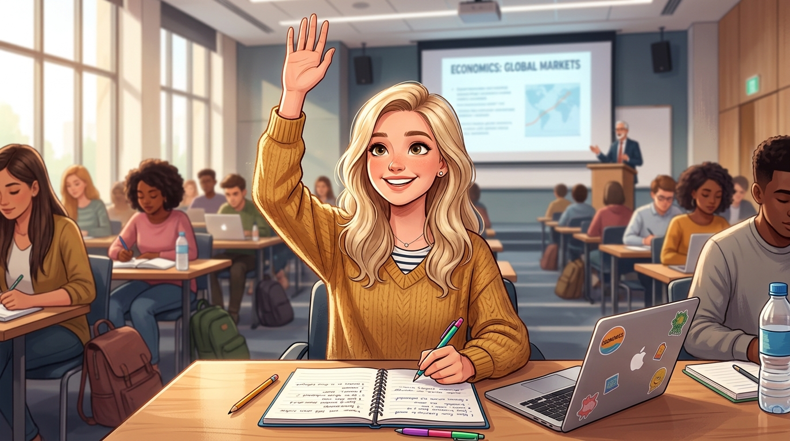
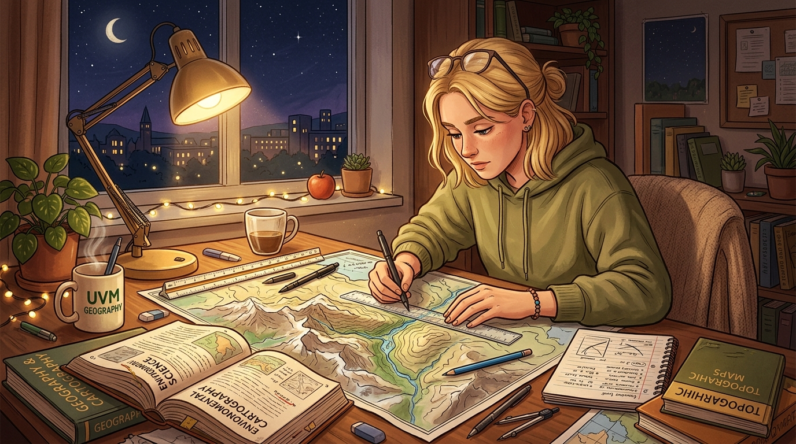
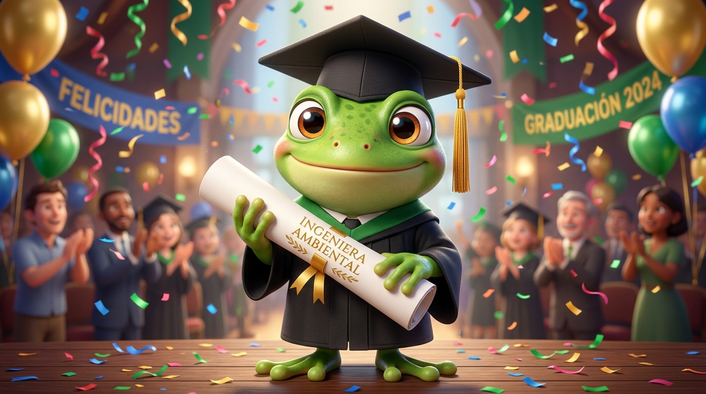
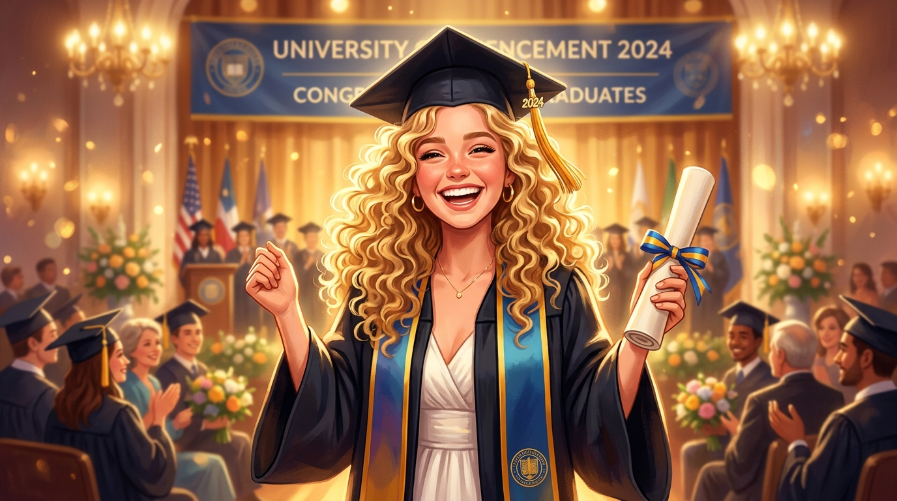

Aleja
"El éxito no llega por casualidad; es el fruto de la disciplina, el rigor y la firmeza para superar cada reto académico."
Muchas felicidades por este gran logro profesional, el primero de muchísimos más que vendrán en tu vida. Culminar una carrera universitaria exige constancia, madurez y perseverancia, cualidades que has demostrado con creces en cada etapa de este recorrido.
Este espacio conmemora el fruto de tu trabajo y la determinación con la que construiste este gran paso hacia el futuro.
El empeño constante por aprender

Siempre con la mano arriba, buscando entender cada concepto a fondoNadie más que tú se esforzaba tanto en aprender de verdad. Mientras otros se conformaban con lo básico, tú siempre buscabas ir más allá, investigando, preguntando e intentando solucionar cada duda que te surgía en el camino.
Esa curiosidad constante y el compromiso por dominar cada tema marcaron la diferencia a lo largo de toda tu formación.
Noches de mapas y retos superados

Las desveladas trazando mapas y repasando temas complejosFueron innumerables las desveladas que te pegabas haciendo mapas con meticulosa precisión, revisando planos y repasando una y otra vez para materias tan desafiantes como aguas residuales.
Fueron jornadas exigentes donde el cansancio se hacía sentir, pero en cada parcial, entrega y proyecto demostraste que siempre podías superarte una y otra vez sin dar un paso atrás.
Cada madrugada de estudio fue puliendo la ingeniera rigurosa y capaz que hoy eres.
¡Ingeniera Ambiental!
Un título ganado a pulso
Celebrando con honores el título de Ingeniera AmbientalCada esfuerzo, cada cálculo y cada desvelo finalmente dieron su mayor fruto. Hoy portas con total legitimidad y orgullo el título de Ingeniera Ambiental.
El planeta y tu profesión reciben a una mujer dedicada, disciplinada y lista para dejar una huella positiva en el mundo.
Tu momento de estar inmensamente feliz

Sonríe con el alma: hoy cosechas todo lo que sembrasteHoy es un momento para que estés verdaderamente feliz y satisfecha contigo misma.
Estoy muy orgulloso y feliz de que hayas podido lograr este gran objetivo, que es solo uno de los muchos logros más que vas a alcanzar en tu vida. En ese poco tiempo que tuve la oportunidad de acompañarte en este gran proceso, vi que eras una muy buena estudiante y una chica con todas las capacidades para cada día superarse más y más.
A pesar de todas las dificultades que se presentaron a lo largo de toda tu carrera, lograste finalizarla con éxito, y eso es algo que de verdad no lo cumple cualquiera.